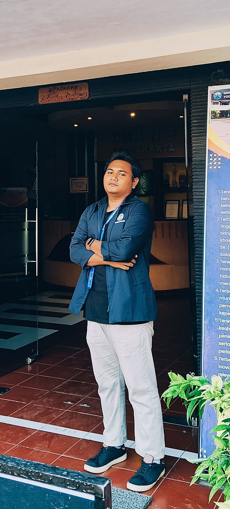
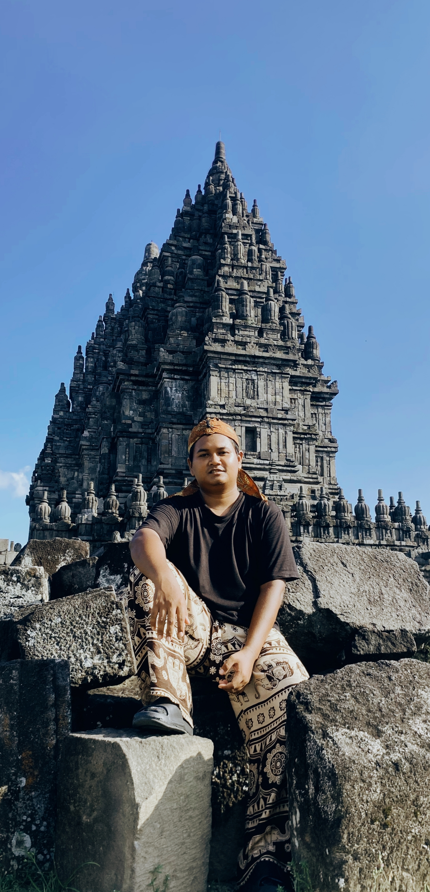
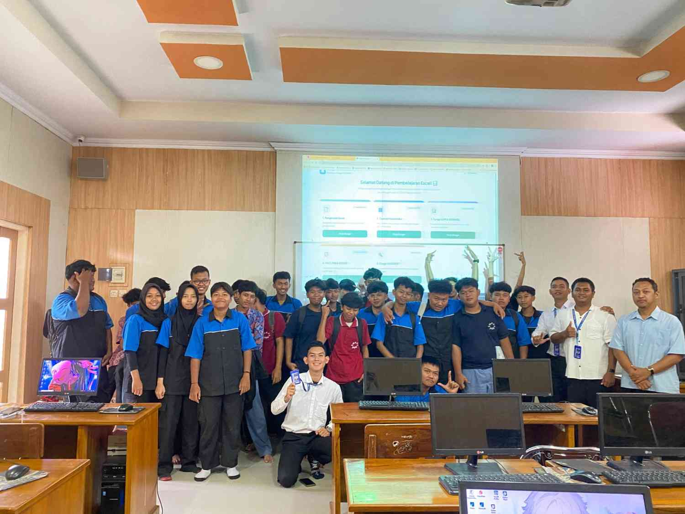

Halo, Saya
Muhammad Ridho Sani S.Kom
Saya adalah mahasiswa Pendidikan Profesi Guru (PPG) Prajabatan Universitas Negeri Yogyakarta. E-Portofolio ini merupakan rekam jejak perjalanan, karya, pengalaman, serta refleksi saya selama menempuh pendidikan profesi guru sebagai bagian dari proses bertransformasi menjadi pendidik yang profesional, inovatif, adaptif terhadap perkembangan teknologi, dan senantiasa berpihak pada peserta didik. Dalam perjalanan PPG ini, saya melaksanakan Praktik Pengalaman Lapangan (PPL) di SMK Negeri 5 Yogyakarta, dengan mengampu mata pelajaran Informatika serta Koding dan Kecerdasan Artifisial (KKA). Melalui pengalaman tersebut, saya memperoleh kesempatan untuk merancang, melaksanakan, dan mengevaluasi pembelajaran yang relevan dengan kebutuhan abad ke-21, sekaligus mengintegrasikan teknologi digital dan kecerdasan artifisial dalam proses pembelajaran.


Muhammad Ridho Sani
Mahasiswa PPG Prajabatan — Calon Pendidik Profesional
Saya lahir di Jepara
Kota kelahiranku yang kaya akan budaya dan sejarah, menginspirasi perjalananku.

Jepara Kota Ukir
Seni pahat kayu yang mendunia, melambangkan ketelitian dan kesabaran.
Bumi Kartini
Tempat lahirnya pahlawan emansipasi wanita, inspirasi pendidikan untuk semua.
Pesona Bahari
Keindahan Pantai Kartini hingga Karimunjawa yang menenangkan jiwa.
Mengapa Saya Ingin Menjadi Guru?
"Inspirasi terbesar saya berawal dari keyakinan bahwa pendidikan adalah kunci memutus rantai ketidaktahuan. Saya bercita-cita menjadi guru profesional bukan sekadar untuk mentransfer ilmu, melainkan untuk menyalakan api keingintahuan dalam diri setiap anak."
"Guru yang baik itu bagaikan lilin; ia menghabiskan dirinya untuk menerangi jalan bagi orang lain."
— Mustafa Kemal Atatürk
Jejak Pendidikan
Sekolah Dasar (SD)
SD Negeri 101736 Medan Krio (Sumatra Utara) | Lulus Tahun 2014
Sekolah Menengah Pertama (SMP)
SMP Negeri 40 Medan (Sumatra Utara) | Lulus Tahun 2017
Sekolah Menengah Kejuruan (SMK)
SMK Muhammadiyah 3 Mayong Jepara (Jawa Tengah) | Lulus Tahun 2020
Sarjana (S1) Pendidikan
STMIK Borneo Internasional Balikpapan (Kalimantan Timur) | Lulus Tahun 2025
PPG Prajabatan
LPTK Universitas Negeri Yogyakarta | Sedang Ditempuh
Artefak Pembelajaran
Kumpulan RPP, hasil kerja peserta didik, dan media pembelajaran.
Video Praktik Pembelajaran

Pelaksanaan Pembelajaran Model PBL
Video ini merupakan dokumentasi pelaksanaan praktik mengajar menggunakan model Prolem Based Learning.
Lembar Penilaian Guru Pamong
Dokumen evaluasi pelaksanaan pembelajaran dari Guru Pamong untuk setiap siklus.
Analisis & Refleksi Penilaian Guru Pamong (Siklus 1–3)
Analisis Umum
Kekuatan yang Tampak
Guru pamong menyoroti kekuatan saya dalam hal komunikasi yang jelas, kepercayaan diri, penampilan profesional, serta kemampuannya membuka pelajaran dengan apersepsi yang relevan dan menggunakan media pembelajaran sesuai kebutuhan murid, yang terus meningkat dari siklus ke siklus hingga mencapai skor maksimal di siklus 3.
Area Pengembangan
Catatan pengembangan yang konsisten muncul adalah perlunya peningkatan metode pembelajaran kolaboratif (skor 2-3), pengorganisasian waktu yang lebih baik (skor 2-3), serta penyusunan instrumen penilaian yang lebih lengkap (kunci jawaban dan rubrik skor 2 di siklus 1, masih 3 di siklus 2-3), termasuk penerapan teknik scaffolding dan variasi media yang mengikuti transisi kegiatan.
Kesesuaian dengan RPP
Pelaksanaan pembelajaran secara umum sudah selaras dengan RPP yang dirancang, terlihat dari kenaikan nilai keduanya yang beriringan (siklus 1: 71,25 dan 71,3; siklus 2: 78,75 dan 78,75; siklus 3: 95 dan 95). Penyesuaian di lapangan terutama dilakukan pada aspek interaksi murid dan pemberian umpan balik, yang semula kurang optimal menjadi sangat baik pada siklus 3.
Rencana Tindak Lanjut
Berdasarkan masukan seluruh siklus, langkah strategis yang akan diambil adalah: (1) merancang kegiatan diskusi kelompok dengan alokasi waktu yang lebih terstruktur, (2) menyusun rubrik penilaian dan kisi-kisi jawaban secara lengkap sebelum mengajar, (3) menerapkan variasi media pembelajaran yang melibatkan partisipasi aktif murid sejak awal kegiatan inti, serta (4) melakukan simulasi transisi kegiatan untuk memastikan kesinambungan penguatan kompetensi murid.
Refleksi Pribadi
Setelah membaca ketiga lembar penilaian, saya belajar bahwa konsistensi refleksi dan perbaikan bertahap benar-benar berdampak pada kualitas mengajar. Penilaian ini meyakinkan saya bahwa kegagalan di siklus awal bukan akhir, melainkan peta menuju perbaikan. Perubahan pola pikir yang akan saya bawa ke depan adalah menjadikan setiap masukan sebagai fondasi untuk terus berinovasi, terutama dalam mengelola waktu dan merancang asesmen yang autentik, sehingga pembelajaran tidak hanya berpusat pada guru tetapi benar-benar membangun kompetensi murid secara kolaboratif.
Profil Model Guru Impian
Visi, misi, dan karakter esensial yang terus saya kembangkan untuk menjadi pendidik masa depan.
Misi Utama
- Memfasilitasi pembelajaran yang berpusat pada peserta didik (Student-Centered Learning).
- Mengintegrasikan teknologi secara bermakna untuk meningkatkan kualitas pemahaman.
- Menumbuhkan Profil Pelajar Pancasila dalam setiap interaksi dan materi ajar.
Kompetensi
Karakter Ideal
Galeri Dokumentasi PPL
Momen-momen berharga selama kegiatan observasi, asistensi, dan praktik mengajar.
Refleksi Akhir PPL Terbimbing
Apa yang telah dipelajari selama tahapan PPL Terbimbing?
Selama tahapan PPL Terbimbing di SMK Negeri 5 Yogyakarta, saya telah mempelajari berbagai keterampilan penting dalam menjadi pendidik profesional, antara lain cara menyusun Rencana Pelaksanaan Pembelajaran (RPP) yang baik dan benar sesuai dengan kurikulum yang berlaku, membuat media pembelajaran yang interaktif dan menarik untuk meningkatkan motivasi belajar siswa, memahami karakteristik siswa yang beragam sehingga dapat menyesuaikan pendekatan pembelajaran, mengintegrasikan materi dengan konteks jurusan atau keahlian siswa agar lebih relevan dan aplikatif, serta membimbing siswa yang mengalami kesulitan belajar secara individual. Selain itu, saya juga belajar mengelola dinamika kelas secara efektif, melakukan evaluasi pembelajaran yang berkelanjutan, serta berkolaborasi dengan guru pamong dan rekan sejawat untuk terus memperbaiki kualitas pengajaran.
Apakah terdapat pengalaman menantang dan bagaimana solusinya?
Selama PPL Terbimbing di SMK Negeri 5 Yogyakarta, saya menghadapi tantangan dalam menyampaikan materi keamanan digital yang relevan dengan jurusan kayu (Teknik Konstruksi Kayu atau Desain Mebel) karena secara substantif kedua bidang tersebut tampak kurang berhubungan langsung. Solusi yang saya terapkan adalah dengan membuat apersepsi yang kontekstual dan menarik, yakni mengangkat kasus penipuan daring (scam) yang dikaitkan dengan kebiasaan siswa seperti melakukan top up game online. Pendekatan ini berhasil membangun keterkaitan bahwa keamanan digital tetap penting bagi siapa pun, termasuk siswa jurusan kayu, karena aktivitas digital seperti transaksi pembelian material, pemasaran produk, atau sekadar hiburan game juga rawan terhadap ancaman siber. Dengan demikian, siswa menjadi lebih tertarik dan memahami bahwa materi keamanan digital bersifat universal dan relevan untuk melindungi aktivitas daring mereka sehari-hari.
Umpan balik konstruktif untuk perbaikan ke tahap PPL Mandiri?
Umpan balik konstruktif untuk perbaikan dari tahap PPL Terbimbing menuju PPL Mandiri bagi saya adalah bahwa saya perlu meningkatkan kemandirian dalam merencanakan dan melaksanakan pembelajaran tanpa ketergantungan pada guru pamong, termasuk menyusun seluruh perangkat pembelajaran (RPP, bahan ajar, LKPD, instrumen penilaian) secara lengkap dan sistematis. Saya juga harus mengembangkan kemampuan pengelolaan kelas yang lebih baik, seperti mengantisipasi dinamika siswa, mengatur waktu secara disiplin, serta merancang kegiatan yang berpusat pada siswa dengan variasi metode (diskusi, proyek, problem-based learning). Selain itu, saya perlu memperkuat keterampilan refleksi diri dan evaluasi autentik agar dapat mengidentifikasi kelemahan secara mandiri dan melakukan perbaikan berkelanjutan. Tak kalah penting, saya harus mengasah komunikasi asertif dan pendekatan personal kepada siswa untuk membangun hubungan guru-murid yang suportif, mengingat di PPL Mandiri saya akan memegang tanggung jawab penuh atas keberhasilan belajar mereka.
Filosofi Mengajar
Ideologi yang mendasari langkah saya di ruang kelas.
Pendidikan bagi saya bukan sekadar mentransfer pengetahuan ke dalam bejana kosong, melainkan sebuah proses menyalakan api keingintahuan yang akan terus menyala sepanjang hayat. Saya percaya bahwa setiap siswa memiliki potensi unik yang perlu digali, bukan sekadar diisi dengan informasi.
Keyakinan saya sejalan dengan pemikiran luhur Ki Hajar Dewantara mengenai sistem "Among", yaitu ing ngarsa sung tuladha, ing madya mangun karsa, tut wuri handayani. Di depan, saya memberi teladan; di tengah, saya membangkitkan semangat dan kemauan siswa; dari belakang, saya memberikan dorongan dan kebebasan bertanggung jawab. Prinsip ini mengajarkan bahwa guru adalah pamong yang menuntun tumbuhnya kekuatan kodrat siswa, bukan memaksakan kehendak.
Nilai-nilai empati, inklusivitas, dan growth mindset menjadi fondasi utama setiap langkah saya di ruang kelas. Empati membuat saya selalu berusaha memahami latar belakang, kesulitan, dan cara belajar setiap siswa. Inklusivitas mendorong saya untuk menciptakan lingkungan belajar yang aman dan menghargai keberagaman, tanpa membedakan jurusan, kemampuan, atau gaya belajar. Sementara growth mindset mengajarkan saya dan siswa bahwa kegagalan adalah bagian dari proses belajar, dan usaha serta strategi yang tepat dapat mengubah kemampuan seseorang.
Informasi
Pesan.